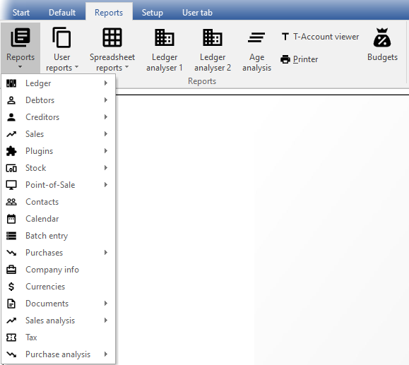

Reports menu
On the Reports ribbon, the Reports menu lists all the standard reports, which are required to manage the information in a Set of Books. In addition to these standard reports, you may also create your own user or custom reports in the Report designer.
|
|
These reports that are stored in the " ...\plug_ins\reports\systemreports" folder. |

If you are creating transactions from your stock file (processing documents - invoices, credit notes, purchases and supplier returns documents), you will need to view reports in the stock ledger, document listing, sales analysis, purchase analysis reports. 
To access the Reports menu:
Click on the Reports ribbon, select Reports. A list of the seventeen (17) reports or groups of reports will be listed.
The summary of these reports, is as follows:
- Ledger - The following reports are available to manage all the accounts in the general ledger:
- Budget v/s realisation 3 periods - Lists the Income and Expense account balances and budget figures for three (3) periods as comparative figures.
- Listing - List the General ledger accounts (Chart of Accounts).
- Transactions - Transactions, Transactions - Standard and Transactions - Extra details.
- Debtors - The following reports are available to manage the accounts in the debtor's ledger:
- Listing - Contacts, Listing, List delivery address, List postal address, List details, Tax and Company registration numbers and the Credit control listing (Credit limit vs Current balance and Available balances as at the date and time of printing) report.
- Print labels - Postal and Delivery address labels.
- Transactions - Transactions - Open item, Transactions - Standard and Transactions - Extra details.
- Debtor statement - Debtor statements and Debtor statements - Outstanding.
- Creditors - The following reports are available to manage the accounts in the creditor's ledger:
- Listing - Contacts, Listing, List delivery address, List postal address, List details, Tax and Company registration numbers and the Credit control listing (Credit limit vs Current balance and Available balances as at the date and time of printing) report.
- Print labels - Postal and Delivery address labels.
- Transactions - Transactions - Open item, Transactions - Standard and Transactions - Extra details.
- Creditor remittance advises - Remittance advise and Remittance advise - Outstanding.
- Sales - Various reports are available to analyse your sales documents. Print reports for, Debtors, Sales and Items reports for Invoices, Credit notes and Quotes.
- Plugins - Price agreement report for the Price agreement plugin.
- Stock - The following reports are available to manage the stock items:
- Reorder - Stock Reorder Report to list only those stock items that needs to be reordered. The Current Stock Levels lists all the current stock levels.
- Print Barcodes – Print the Barcode or the Yagoda barcodes.
- Listing - Print lists of All selling prices report (Selling price 1 / 2 /3) and the Stock item listing report listing the Quantities Cost prices. You may select to print extra details for these reports. You may also print a list of tax classes.
- Backorder - Print a list of Backorders.
- Stock In / Out - The following two (2) reports:
- Stock In / Out - Documents - Displays a summary of sales and purchase documents for each stock item. The details option will list and display the document dates and document numbers for each stock item.
- Stock In / Out - Displays a list of the stock items and the quantities in and out as well as the total prices. The details option will list and display the document dates and document numbers for each stock item.
- Point-of-Sale - The Cash-up and Sales analysis report for the built-in point-of-sale (if you use point-of-sale). Sales and Receipt reports for the plugin point-of-sale systems (if you purchased and use the HorecaPOS or RetailPOS point-of-sale systems).
- Contacts - Lists the details of all your contacts. To list only the contacts for debtor (customer / client) accounts, you need to print it in Debtors → Listing - Contacts. To list only the contacts for creditor (supplier / vendor) accounts, you need to print it in Creditors → Listing - Contacts.
- Calendar - Print the appointments (events) (i.e. Appointment, Debtor Appointment, Creditor Appointment and Hours) that was scheduled in the Calendar / Planner.
- Batch entry - Print the transactions of posted invoices, credit notes purchase and supplier return documents as well as posted batch transactions (i.e. sales journal, purchase journal, payments journals, receipts journals, general journals, etc.).
- Purchases - Various reports are available to analyse your purchase documents. Print Graphs, Creditors, Purchases and Items reports for Purchase and Supplier return documents as well as Orders.
- Company info -
- Bank accounts List the details of the company bank accounts details "List Bank accounts" for up to two (2) bank accounts as entered / edited in the Company info (Setup ribbon).
- Company info – Information – Lists the details of the following:
- Information - Document heading and messages (up to 3 lines) as entered in the Documents setup (Setup ribbon) for each of the Sales documents (i.e. Invoices, Credit notes and Quotes tabs) as well as Purchase documents (i.e. Purchases, Supplier returns and Orders tabs). This information is standard and will be printed on all documents.
- Global statement message (up to 3 lines) as entered on the Statement setup tab on Documents setup (Setup ribbon). This information will print standard on all Statements (Reports → Debtors – Outstanding (Reports ribbon)). This is in addition to the specific messages (up to 4 lines) that can be entered in the Delivery address tab individual debtor accounts (Debtors (Default ribbon)).
- Selling price descriptions – The descriptions of Selling price 1, Selling price 2 and Selling price 3 as entered in the Selling price descriptions fields (Stock information - Setup ribbon).
- Cost of Sales –
- Create Cost of Sales - Yes - Cost of Sales is activated.
- No - Cost of Sales is not activated.
- Average cost - Yes – Average Cost of Sales is activated.
- No – Latest Cost of Sales is activated.
- Currencies - The Currencies report will list the currencies (added / edited in the Setup → Currencies menu on the Setup ribbon).
You may process Multi-currency documents (i.e. invoices, credit notes and quotes for debtors (customers / clients) or purchases, supplier returns and orders for creditors (suppliers).
You may (once currency or currencies are added) select a currency when processing documents. The currency will be printed in the document layout files.
- Documents - Lists your documents, such as invoices, credit notes, purchases, supplier returns documents, orders and quotes or a selection of documents or for a selected period.
- Sales analysis - You may print reports for five (5) reporting groups (i.e. Debtor group 1, Debtor group 2, Document group 1, Document group 2 and Salespersons) for each of your sales document types (i.e. Invoices, Credit notes and Quotes). You may also print a Sales analysis report for each of these five (5) reporting groups which includes both posted Invoices and Credit notes.
- Sales documents for each document type (i.e. Invoices, Credit notes and Quotes) - You may print reports for five (5) reporting groups (i.e. Debtor group 1, Debtor group 2, Document group 1, Document group 2 and Salespersons).
- Invoices and Credit notes - You may print reports for five (5) reporting groups (i.e. Creditor group 1, Creditor group 2, Document group 1, Document group 2 and Salespersons).
- Sales per product - Stock group 1 and Stock group 2 are also available to analyse the sales (invoices) and returns (credit notes of trading stock items (default stock item type).
- Tax - If you are registered as a VAT/GST/Sales Tax vendor, you need to print and view reports for a specific period for all your Tax (VAT/GST/Sales Tax) or for a specific tax code such as Input VAT/GST/Sales Tax, Output VAT/GST/Sales Tax, Zero-rated VAT/GST/Sales Tax, etc.
- Purchase analysis -
- Purchase documents for each document type (i.e. Purchases, Supplier returns and Orders) - You may print reports for five (5) reporting groups (i.e. Creditor group 1, Creditor group 2, Document group 1, Document group 2 and Salespersons).
- Purchase and Supplier return documents - You may print reports for five (5) reporting groups (i.e. Creditor group 1, Creditor group 2, Document group 1, Document group 2 and Salespersons).
- Purchases per Product - Stock group 1 and Stock group 2 are also available to analyse the purchases and returns for trading stock items (default stock item type).